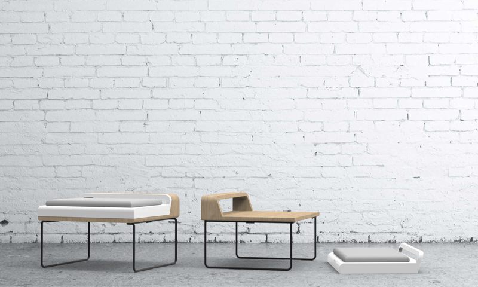
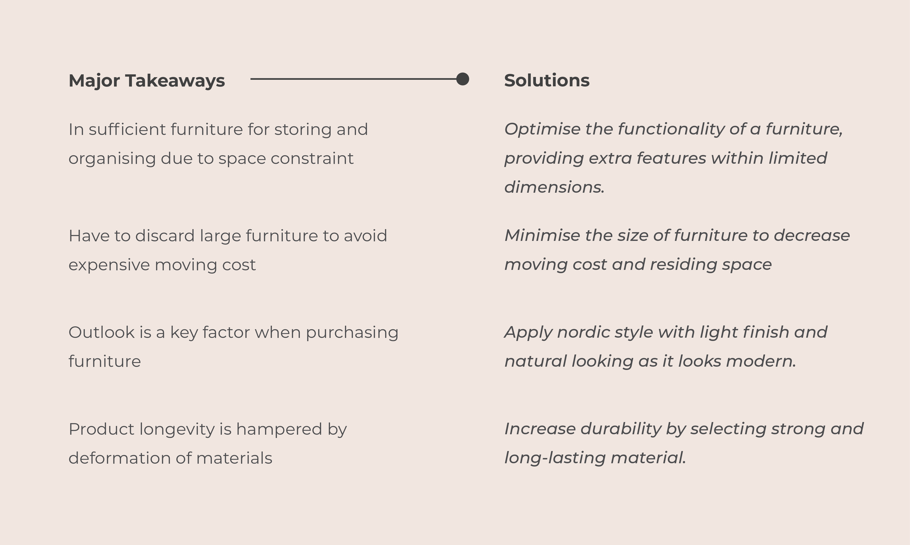
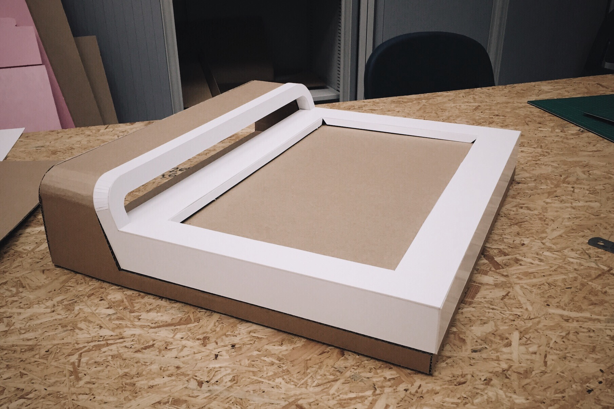

Tabi
Multipurpose Stool for Urban Nomad
User Experience Design
Product Design
Product Designer

Tabi, which means journey in Japanese, aims to provide an agile and versatile furniture solution for urban nomads considering their unique itinerant living habit.
01
Finding the problem
Design for Urban Nomads
The topic of this project was designing furniture for urban nomads, whose lifestyles are not concentrated on one location. They are always on the road, and need new concepts to live, rest and work in.
Interview
At the beginning, I interviewed two urban nomads to disclose their needs and pain points regarding the selection of furniture and their key concerns for its usage. Organising the information into an affinity diagram, I could have a clear picture of their frustrations, touch points and goals/motivations.
Persona & Affinity Diagram
02
Defining Opportunity

Moodboard
03
Ideation
After researching the living context of urban nomads, I started to brainstorm ideas which met the needs and wants of them. Through competitive analysis, the multifunctional stool was being chosen.

04
Prototyping
Because of the time constraint, cardboard was the most desirable material to produce a 1:1 prototype for visualising and testing the chosen design. I used Solidworks and paper cutting machine to make the paper cut-outs, which were then folded and glued to form the designated shapes.

Ergonomic Testing
To ensure that the design fulfilled the ergonomic standards, the heights of the stool, desk and floor seat were measured and tested.
I also tried to hold the handle and put a laptop into the storing space to see if they met the functionality requirements.
05
Final Design
The design serves various functions by transforming from a stool with a document rack to a floor seat and a tasking desk.
The foldable legs make the stool easy to store without taking up much space.
The magnets embedded in the desk and floor seat attract and attach to each other, facilitating the gripping of the whole piece.
Usage Scenario
06
Materials & Sustainability
Desk
FSC-certified European Beech is used for making the desk as it is the most available and accessible temperate hard wood in the world. Though it is strong and hard, it has good machine ability and finishability. The high availibility of beech also keeps the pricing consistent and afforadable when compared to other woods with similar properties.
Seat
The seat is made of oak veneer which has a hardwood surface and a softwood veneer inside. The oak is sourced from FSC-certified forest and is strong and duable. Oak-veneered plywood can lower the price and amount of solid wood used.
Legs
Low-carbon steel is used for making the legs since it emits much less CO2 per ton than other metal in production. Though it is less strong, it is cheap and easy to shape, and what is more, it requires less energy to be bent.